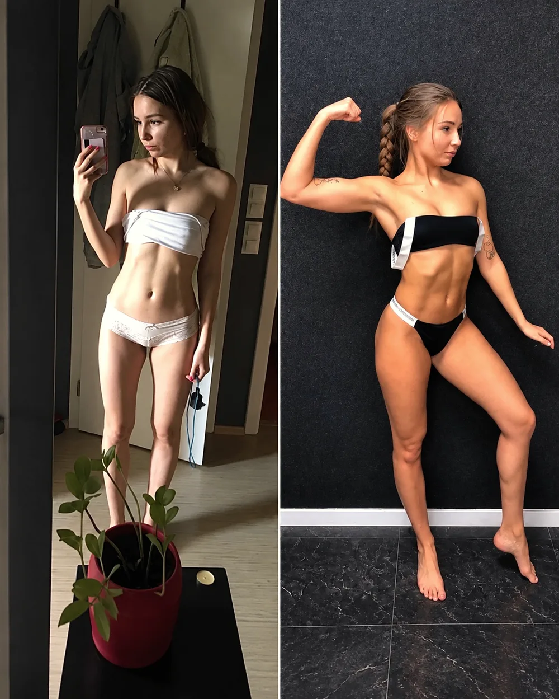
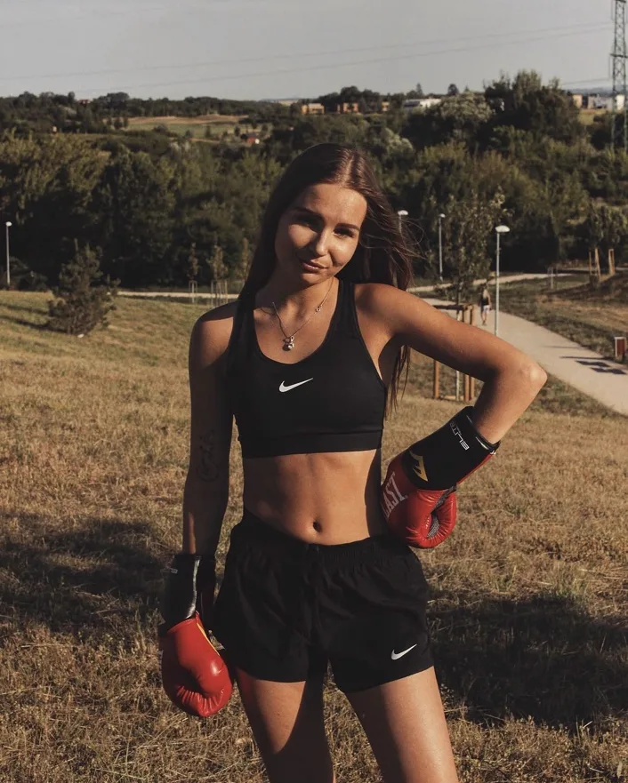
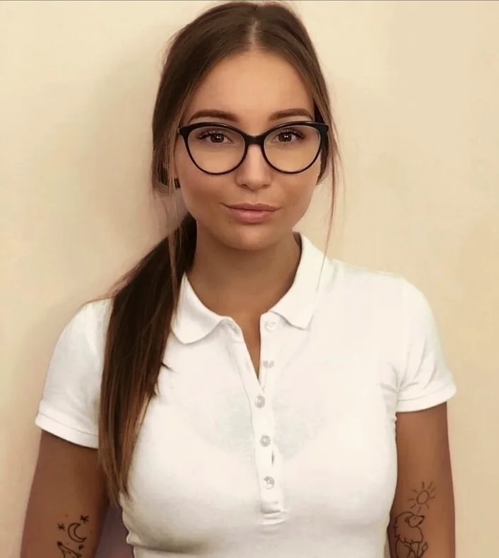
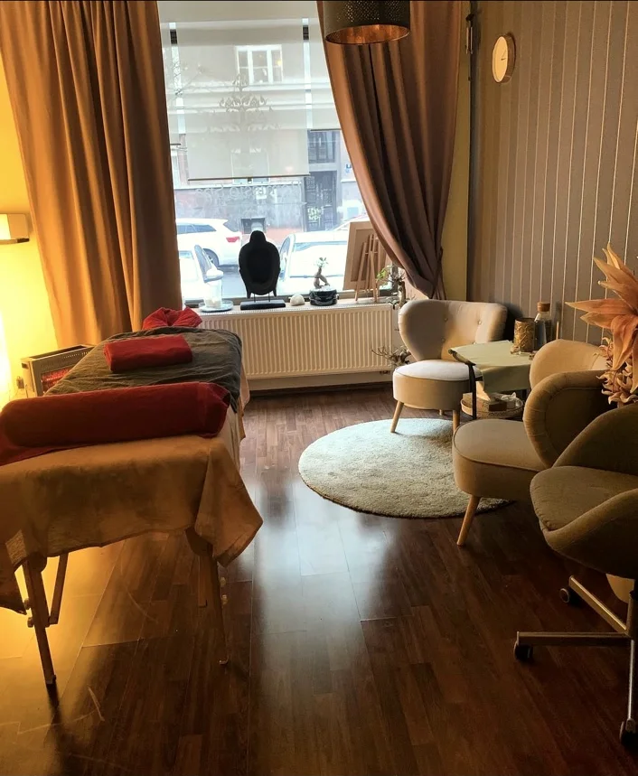
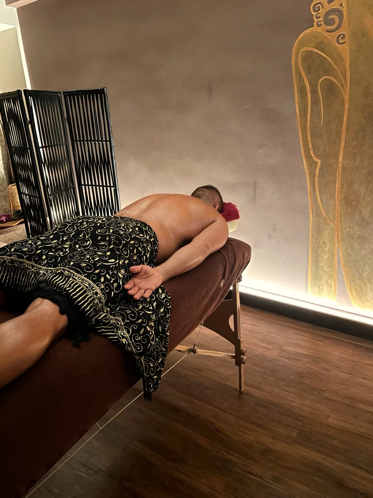
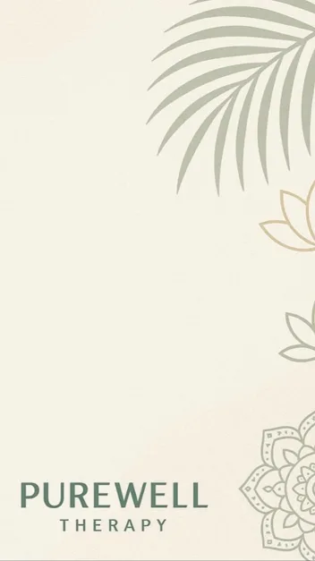
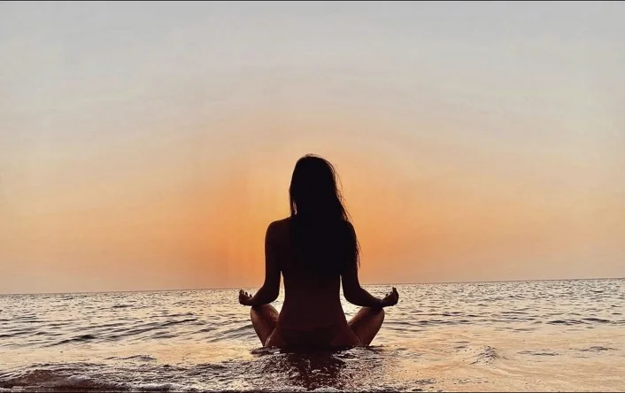

Proč dělám to, co dělám
Jmenuji se Ivana Soukupová. Osm let se individuálně věnuji práci s tělem a dnes také s lidmi na cestě zotavení. Tady je příběh, proč.

Tělo jako celoživotní fascinace
Od malička mě fascinovalo lidské tělo. Dodnes ho vnímám jako jeden z nejinteligentnějších systémů, kterému ani současná éra umělé inteligence nemůže plně konkurovat. Je to pro mě největší předmět zájmu – ve studiu i ve vlastních rešerších, kterým se věnuji dodnes.
S masážemi jsem začala v 18 letech, nejdřív s klasickými sportovními, rekondičními a relaxačními. Od začátku mě ta práce naplňovala, protože miluji pomáhat druhým.
Při studiu na sportovní vysoké škole VŠTVS Palestra se s mým velkým zájmem o sport, fitness, fyziologii a bojové sporty proměnila i moje klientela. Začali za mnou chodit hlavně sportovci, fighteři a lidé s velmi aktivním životem. Byla to pro mě výzva: často čelí zraněním a potřebují odbornější péči, než jakou nabídne klasická rekondiční masáž. Vedle studia medicínských předmětů jsem si proto doplnila kurzy deep tissue, terapie trigger pointů, mobilizace páteře a dalších mobilizačních technik, postizometrické relaxace a kompenzačních cvičení.
V té době jsem si také na vlastní kůži zažila, co dokáže pohyb a práce s tělem. Sport mě na vysoké škole doslova uzdravil z letitého boje s úzkostmi, panickými atakami, podvýživou a anorexií. Palestra mi nedala jen teorii a trenérskou kvalifikaci – na sobě samé jsem vyzkoušela, co s tělem i myslí udělá konzistentní cvičení a práce s tělem. Bojové sporty se pak staly dalším milníkem mé vlastní somatické praxe a jsou mou velkou vášní dodnes.


Osm let v obrazech
Od prvních masáží v osmnácti přes oblíbené masérny až po první podobu značky Pure Well.





Zkouška, která prohloubila mou práci
O několik let později, po prodělání covidu, přišla další velká zkouška. Roky jsem zažívala stavy, které ohrožovaly kvalitu mého života na každé rovině. Ve 25 letech mě lékaři po neúspěšných léčbách a hospitalizaci odkázali na plnou invaliditu.
Odmítla jsem se s tím smířit. Po malých krůčcích – skrze pohyb, cvičení, tanec, box a postupnou titraci mentálního diskomfortu – jsem se začala zotavovat.
Práce s tělem a nervovým systémem mi tehdy pravděpodobně zachránila život. A ještě víc prohloubila můj zájem o to, jak nervový systém propojuje tělo a mysl. Proto jsem svou masérskou praxi rozšířila o somatický přístup. Díky této cestě dnes pracuji také jako akreditovaná peer konzultantka v oblasti duševního zdraví – a moje zvídavost v tajemstvích lidského potenciálu nekončí.
Dnes jsem po nemoci zpátky v aktivním životě. Box, překážkové závody i chvíle ticha v přírodě. Výzvy pro mě nejsou překážkou, ale cestou.


Praxe a vzdělání
let
První klienti – sportovní, rekondiční a relaxační masáže.
Individuální praxe
Vlastní klientela, převážně na doporučení.
Certifikátů
Masáže, terapie těla, trenérství i peer práce.
Akreditace
Peer konzultantka v oblasti duševního zdraví.
Nástěnka diplomů
Tříleté vysokoškolské studium na VŠTVS Palestra a 16 certifikovaných kurzů. Základ tvoří kurzy masáží a práce s tělem. Pohled z dalších oborů mi pomáhá vidět člověka v širších souvislostech.
Masáže a terapie těla
- Sportovní a rekondiční masáž · Mavo, 2016
- Thajská tradiční masáž I. · EduSpa, 2018
- Dornova metoda a Breussova masáž · EduSpa, 2019
- Kineziotaping I. · EduSpa, 2019
- Trigger points terapie · EduSpa, 2019
- Masáž proti celulitidě a formování postavy · EduSpa, 2019
Pohyb a trenérství
- Instruktor zdravotní tělovýchovy · VŠTVS Palestra, 2020
- Kurz relaxačního cvičení · VŠTVS Palestra, 2020
- Instruktor fitness II. třídy · Fitness Coach Academy, 2020
- Koučink ve fitness · Fitness Coach Academy, 2020
- Kurz první pomoci · SSI Group, 2020
Duševní zdraví
- Akreditovaný kurz pro peer konzultanty v oblasti duševního zdraví · PhDr. Světlana Soldánová, 2025
Ostatní vzdělání
- VŠTVS Palestra – tříleté vysokoškolské studium, obor volnočasový pedagog
- Vychovatelství · VŠTVS Palestra, 2020
- Metodika přípravy a realizace pobytu v přírodě · VŠTVS Palestra, 2018
- Reiki I. · Mistr Ing. Petr Chmelík, 2017
- Trichologie a dermotrichologie · Kapyderm, 2018
Tělo a mysl jsou jediný kus oblečení, který budeme nosit do konce života.
Tak ať se nám v něm žije co nejlépe.